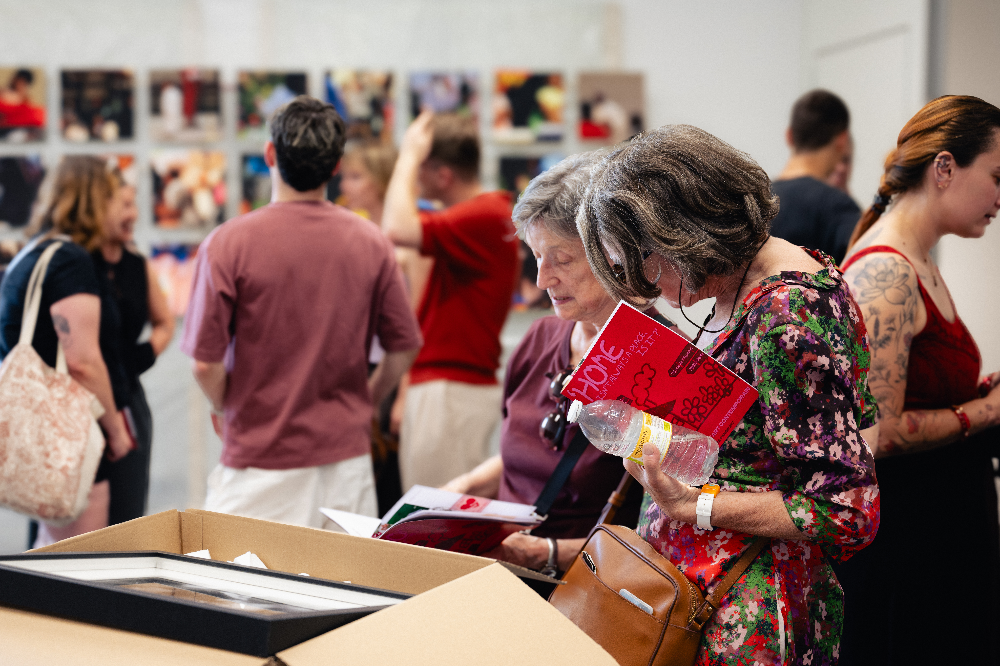
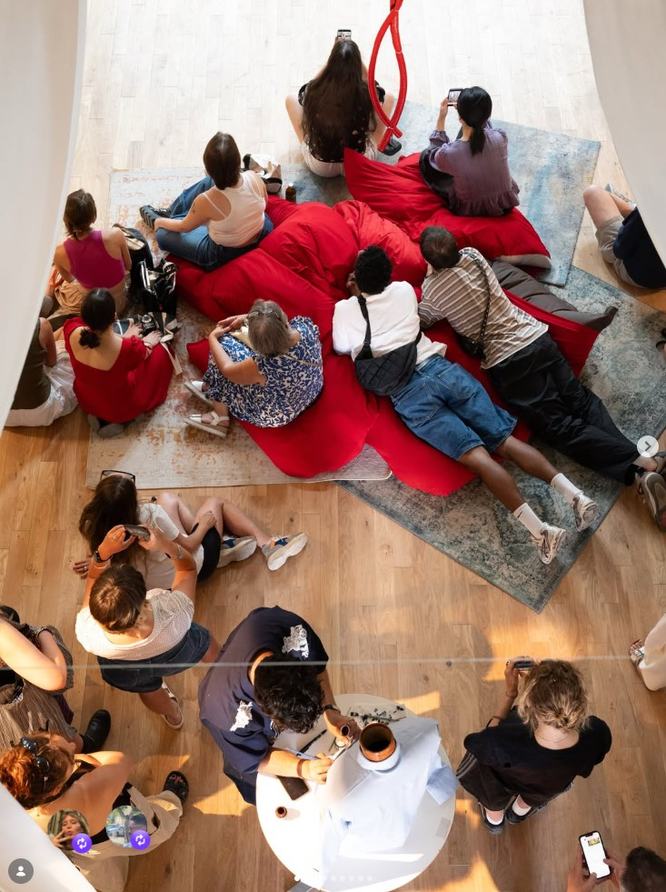

Mai 2026 – Exposition « Home isn’t always a place, is it ? »
Organisée au Kiosque Citoyen (Paris 10e), cette première exposition interrogeait le sentiment du chez soi, à travers des créations plastiques et une scénographie immersive. Des ateliers spécifiques ont été menés avec les accueils de jour partenaires.

Juillet 2026 – Exposition-Évènement « Habiter son corps »
À la Chapelle Saint-Lazare (Paris 10e), cet événement de 4 jours a réuni plus d'une dizaine d'artistes plasticiens, installations sensorielles interactives, diffusions sonores et performances vivantes (chant, live painting, drag show). Des visites dédiées ont été organisées pour des publics spécifiques de l'association France Alzheimer.